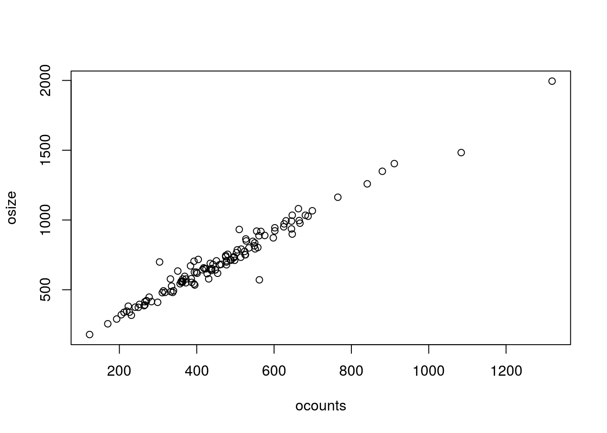
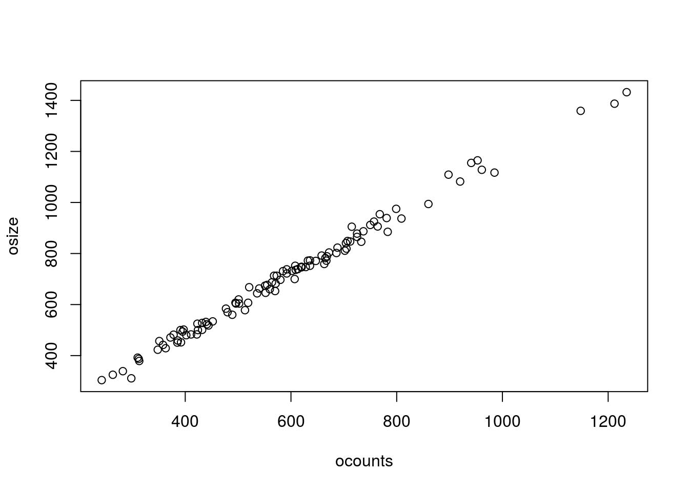
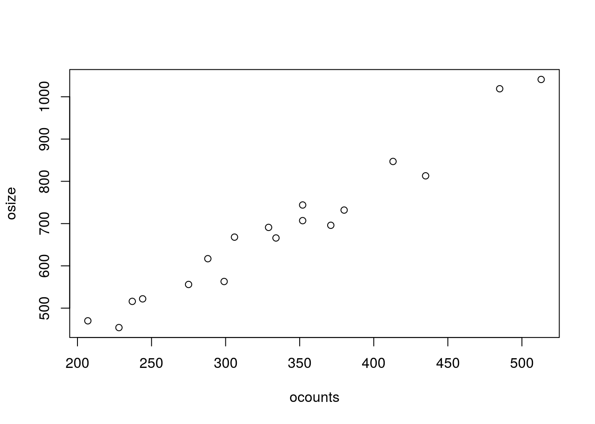
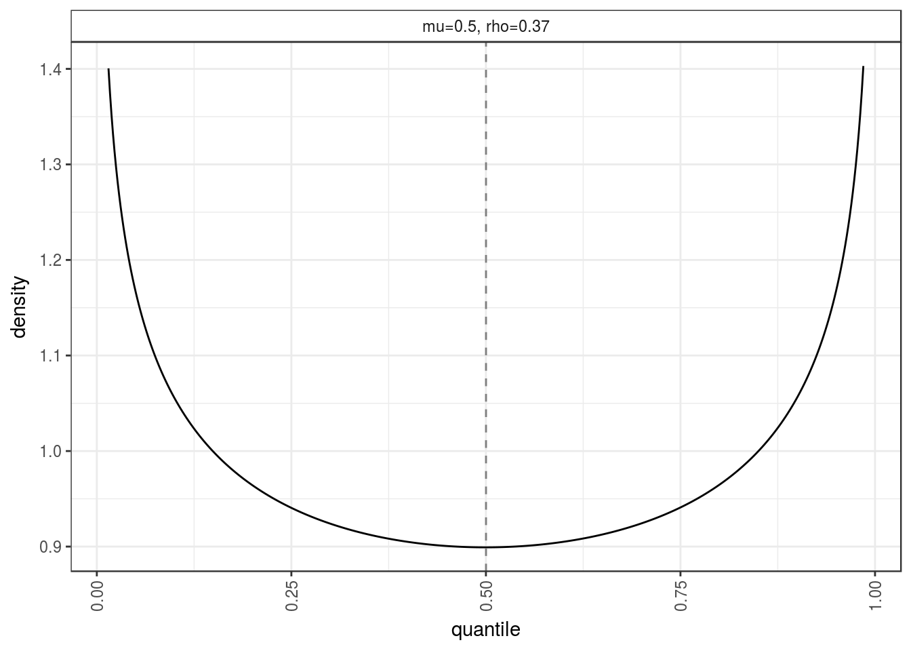

library(updog)
library(dplyr)##
## Attaching package: 'dplyr'## The following objects are masked from 'package:stats':
##
## filter, lag## The following objects are masked from 'package:base':
##
## intersect, setdiff, setequal, unionlibrary(ggplot2)
load("../data/subset_David.Rdata")
ploidy <- 6
dat_list <- list()
for (col in 1:length(subset_david)){
dat <- as_data_frame(subset_david[[col]])
dat$id <- rownames(subset_david[[col]])
names(dat) <- c("A", "a", "id")
dat <- dat %>% mutate(ocounts = A, osize = a + A)
pdat <- filter(dat, grepl("Beauregard", id) | grepl("Tanzania", id))
cdat <- filter(dat, !(grepl("Beauregard", id) | grepl("Tanzania", id)))
pdf(file = paste0("../output/raw_plots/geno_plot", col, ".pdf"), family = "Times", height = 4, width = 6)
pl <- plot_geno(ocounts = cdat$ocounts, osize = cdat$osize, ploidy = ploidy, seq_error = 0)
print(pl)
dev.off()
dat_list[[col]] <- cdat
print(sort(dat$osize)[1:5])
}## [1] 150 151 163 178 199## [1] 129 188 221 227 237## [1] 19 30 32 40 43## [1] 34 40 44 46 68## [1] 55 66 74 81 84## [1] 179 256 290 304 305## [1] 65 69 74 76 81## [1] 17 19 22 24 27## [1] 85 96 122 125 134## [1] 2 50 56 57 69dat <- dat_list[[6]]
uout6 <- updog(ocounts = dat$ocounts,
osize = dat$osize,
ploidy = 6, update_geno = TRUE, overdispersion = FALSE)## 4 5
## 4 5
## 4 5
## 4 5
## 4 5
## 4 5pk_index <- 4
bindat <- filter(dat, uout6$ogeno == pk_index) %>%
select(ocounts, osize)
pk <- 0:ploidy / ploidy
pvec <- (1 - uout6$seq_error) * pk + uout6$seq_error * (1 - pk)
plot(bindat)
itermax <- 10000
simmat <- matrix(NA, nrow = itermax, ncol = nrow(bindat))
for (index in 1:itermax){
sim_out <- rbinom(n = nrow(bindat), size = bindat$osize, prob = pvec[pk_index + 1])
simmat[index, ] <- sim_out
}
lower <- apply(simmat, 2, quantile, 0.025)
upper <- apply(simmat, 2, quantile, 0.975)
sim_df <- data_frame(lower = lower, upper = upper, ocounts = bindat$ocounts, osize = bindat$osize)
sim_df$mean <- pvec[pk_index + 1] * bindat$ocounts
pl <- ggplot(data = sim_df, mapping = aes(x = osize, y = ocounts)) +
geom_point() +
geom_line(mapping = aes(y = lower), col = "Blue") +
geom_line(mapping = aes(y = upper), col = "Blue") +
theme_bw() +
xlab("Total Reads") +
ylab("Counts A")
pdf(file = "../output/overdispersion/over4.pdf", family = "Times", height = 4, width = 6)
print(pl)
dev.off()## png
## 2mean(sim_df$ocounts < lower | sim_df$ocounts > upper)## [1] 0.2562pbinom(q = sum(sim_df$ocounts < lower | sim_df$ocounts > upper),
size = nrow(bindat), prob = 0.05, lower.tail = FALSE)## [1] 5.257e-15pbinom(q = bindat$ocounts, size = bindat$osize, prob = pvec[pk_index], lower.tail = FALSE)## [1] 1.354e-28 3.658e-23 3.501e-155 5.048e-23 2.218e-14 5.579e-74
## [7] 1.716e-12 1.673e-16 7.928e-34 3.100e-27 3.417e-11 2.855e-25
## [13] 5.074e-13 2.649e-29 8.020e-22 4.144e-25 1.212e-04 6.064e-30
## [19] 1.340e-07 1.429e-07 5.158e-22 3.560e-32 3.047e-03 1.945e-09
## [25] 2.752e-09 1.899e-13 9.397e-22 1.312e-10 4.174e-27 3.404e-11
## [31] 4.880e-14 7.849e-16 8.889e-14 1.548e-17 1.986e-09 4.998e-18
## [37] 2.859e-14 3.014e-48 4.303e-34 3.673e-12 6.121e-20 5.515e-22
## [43] 6.278e-23 4.295e-04 1.597e-24 7.546e-05 9.788e-07 2.040e-10
## [49] 5.900e-14 2.318e-19 1.320e-19 9.726e-10 7.185e-16 2.392e-31
## [55] 1.188e-20 9.800e-11 4.049e-29 2.907e-04 1.465e-29 3.235e-14
## [61] 3.185e-14 1.979e-16 6.260e-13 9.348e-13 2.543e-10 6.274e-14
## [67] 2.061e-24 1.186e-12 1.529e-14 6.169e-18 4.833e-13 1.909e-22
## [73] 1.198e-21 4.972e-22 9.597e-25 1.809e-15 3.978e-18 3.209e-16
## [79] 3.291e-21 9.997e-01 1.277e-23 2.860e-21 7.932e-13 8.883e-20
## [85] 3.356e-29 5.579e-20 1.271e-08 4.086e-14 6.412e-21 4.484e-24
## [91] 7.312e-28 6.234e-29 2.143e-17 3.518e-30 2.845e-11 4.545e-18
## [97] 1.646e-14 8.085e-19 1.539e-12 6.903e-28 1.766e-03 9.928e-11
## [103] 9.508e-30 1.857e-41 3.575e-13 4.832e-17 1.683e-11 8.697e-04
## [109] 4.470e-09 4.125e-08 5.889e-23 4.289e-27 3.265e-17 3.670e-33
## [115] 2.142e-07 7.032e-29 1.680e-15 3.088e-13 3.395e-07 5.280e-23
## [121] 9.796e-09dat <- dat_list[[6]]
uout6 <- updog(ocounts = dat$ocounts,
osize = dat$osize,
ploidy = 6, update_geno = TRUE, overdispersion = FALSE)## 4 5
## 4 5
## 4 5
## 4 5
## 4 5
## 4 5pk_index <- 5
bindat <- filter(dat, uout6$ogeno == pk_index) %>%
select(ocounts, osize)
pk <- 0:ploidy / ploidy
pvec <- (1 - uout6$seq_error) * pk + uout6$seq_error * (1 - pk)
plot(bindat)
itermax <- 10000
simmat <- matrix(NA, nrow = itermax, ncol = nrow(bindat))
for (index in 1:itermax){
sim_out <- rbinom(n = nrow(bindat), size = bindat$osize, prob = pvec[pk_index + 1])
simmat[index, ] <- sim_out
}
lower <- apply(simmat, 2, quantile, 0.025)
upper <- apply(simmat, 2, quantile, 0.975)
sim_df <- data_frame(lower = lower, upper = upper, ocounts = bindat$ocounts, osize = bindat$osize)
sim_df$mean <- pvec[pk_index + 1] * bindat$ocounts
pl <- ggplot(data = sim_df, mapping = aes(x = osize, y = ocounts)) +
geom_point() +
geom_line(mapping = aes(y = lower), col = "Blue") +
geom_line(mapping = aes(y = upper), col = "Blue") +
theme_bw() +
xlab("Total Reads") +
ylab("Counts A")
pdf(file = "../output/overdispersion/over5.pdf", family = "Times", height = 4, width = 6)
print(pl)
dev.off()## png
## 2mean(sim_df$ocounts < lower | sim_df$ocounts > upper)## [1] 0.2885dat <- dat_list[[6]]
uout6 <- updog(ocounts = dat$ocounts,
osize = dat$osize,
ploidy = 6, update_geno = TRUE, overdispersion = FALSE)## 4 5
## 4 5
## 4 5
## 4 5
## 4 5
## 4 5pk_index <- 3
bindat <- filter(dat, uout6$ogeno == pk_index) %>%
select(ocounts, osize)
pk <- 0:ploidy / ploidy
pvec <- (1 - uout6$seq_error) * pk + uout6$seq_error * (1 - pk)
plot(bindat)
itermax <- 10000
simmat <- matrix(NA, nrow = itermax, ncol = nrow(bindat))
for (index in 1:itermax){
sim_out <- rbinom(n = nrow(bindat), size = bindat$osize, prob = pvec[pk_index + 1])
simmat[index, ] <- sim_out
}
lower <- apply(simmat, 2, quantile, 0.025)
upper <- apply(simmat, 2, quantile, 0.975)
sim_df <- data_frame(lower = lower, upper = upper, ocounts = bindat$ocounts, osize = bindat$osize)
sim_df$mean <- pvec[pk_index + 1] * bindat$ocounts
pl <- ggplot(data = sim_df, mapping = aes(x = osize, y = ocounts)) +
geom_point() +
geom_line(mapping = aes(y = lower), col = "Blue") +
geom_line(mapping = aes(y = upper), col = "Blue") +
theme_bw() +
xlab("Total Reads") +
ylab("Counts A")
pdf(file = "../output/overdispersion/over3.pdf", family = "Times", height = 4, width = 6)
print(pl)
dev.off()## png
## 2mean(sim_df$ocounts < lower | sim_df$ocounts > upper)## [1] 0.1111Plot a lot of betas
rhoseq <- c(0.005, 0.01, 0.05, 0.1, 0.1666, 0.2)
mu <- 0.2
dat <- data_frame(x = as.numeric(c()), y = as.numeric(c()))
for (index in 1:length(rhoseq)) {
rho <- rhoseq[index]
alpha <- mu * (1 - rho)/rho
beta <- (1 - mu) * (1 - rho)/rho
x <- seq(0.0, 1, length = 100)
y <- dbeta(x, alpha, beta)
tempdat <- data_frame(x = x, y = y)
tempdat$rho <- rho
dat <- bind_rows(dat, tempdat)
}
dat$rho <- as.factor(paste0("p = 0.2, s = ", dat$rho))
pl <- ggplot(data = dat, mapping = aes(x = x, y = y)) +
facet_wrap(~rho) +
geom_line() +
theme_bw() +
ylab("Density") +
xlab("q") +
theme(strip.background = element_rect(fill = "white")) +
geom_vline(xintercept = mu, lty = 2, col = "grey")
pdf(file = "../output/overdispersion/beta_plots.pdf", family = "Times", height = 4, width = 6)
print(pl)
dev.off()## png
## 2dat <- dat_list[[10]]
uout <- updog(ocounts = dat$ocounts, osize = dat$osize, ploidy = 6, update_geno = TRUE)
uout$p1## [1] 5uout$p2## [1] 5dat$osize[dat$ocounts <= 5]## [1] 84 2 116 116dat$ocounts[dat$ocounts <= 5]## [1] 1 0 0 2library(VGAM)## Loading required package: stats4## Loading required package: splines##
## Attaching package: 'VGAM'## The following object is masked from 'package:updog':
##
## dbetabinomVGAM::pbetabinom(q = 0, size = 116, prob = 4/6, rho = uout$rho)## [1] 1.685e-24VGAM::pbetabinom(q = 2, size = 116, prob = 4/6, rho = uout$rho)## [1] 9.618e-22VGAM::pbetabinom(q = 1, size = 84, prob = 4/6, rho = uout$rho)## [1] 3.631e-19pbinom(0, 116, 2/3)## [1] 4.507e-56pbinom(2, 116, 2/3)## [1] 1.213e-51pbinom(1, 84, 2/3)## [1] 1.412e-38Fit all updog
col <- 1
for(col in 1:length(dat_list)) {
dat <- dat_list[[col]]
uout <- updog(ocounts = dat$ocounts, osize = dat$osize, ploidy = 6, update_geno = TRUE)
pdf(file = paste0("../output/updog_plots/uout", col, ".pdf"), family = "Times", height = 5, width = 5)
plot(uout, plot_beta = FALSE)
dev.off()
pl <- plot_geno(ocounts = dat$ocounts, osize = dat$osize, ploidy = ploidy, seq_error = 0)
pdf(file = paste0("../output/updog_plots/rout", col, ".pdf"), family = "Times", height = 5, width = 5)
print(pl)
dev.off()
}## Warning in est_seq_error(ncounts = ocounts, ssize = osize, ploidy =
## ploidy): Very few points to estimate sequencing error.## no overdispersion
col <- 6
dat <- dat_list[[col]]
uout <- updog(ocounts = dat$ocounts, osize = dat$osize, ploidy = 6, update_geno = TRUE,
overdispersion = FALSE)## 4 5
## 4 5
## 4 5
## 4 5
## 4 5
## 4 5 pdf(file = paste0("../output/updog_plots/uout_alt", col, ".pdf"), family = "Times", height = 5, width = 5)
plot(uout, plot_beta = FALSE)
dev.off()## png
## 2How likely are some aaaAAA child genotypes when AAAAAA and aaaAAA?
qout <- get_q_array(6)
qout[4, 7, 4] * nrow(dat)## [1] 13.65qout[5, 6, 4] * nrow(dat)## [1] 27.3Look at how likely each obs is an outlier in dat_list[[3]]
dat <- dat_list[[3]]
uout <- updog(ocounts = dat$ocounts, osize = dat$osize, ploidy = 6, update_geno = TRUE)
names(uout)## [1] "pival" "rho" "out_mu" "out_rho" "p1geno"
## [6] "p2geno" "prob_ok" "opostprob" "ogeno" "seq_error"
## [11] "input"uout$pival## [1] 0.7947plot_beta_dist_gg(mu = uout$out_mu, rho = uout$out_rho)
## Plot the overdispersed beta
mu <- uout$out_mu
rho <- uout$out_rho
alpha <- mu * (1 - rho)/rho
beta <- (1 - mu) * (1 - rho)/rho
x <- seq(0.0, 1, length = 100)
y <- dbeta(x, alpha, beta)
tempdat <- data_frame(x = x, y = y)
pl <- ggplot(data = tempdat, mapping = aes(x = x, y = y)) +
geom_line() +
theme_bw() +
ylab("Density") +
xlab("q") +
geom_vline(xintercept = mu, lty = 2, col = "grey") +
ylim(0, 1.4)
pdf(file = "../output/overdispersion/dat3.pdf", family = "Times", height = 5, width = 5)
print(pl)
dev.off()## png
## 2This R Markdown site was created with workflowr